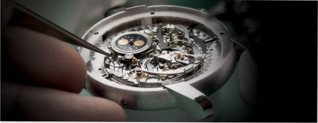
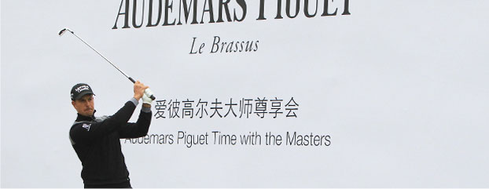
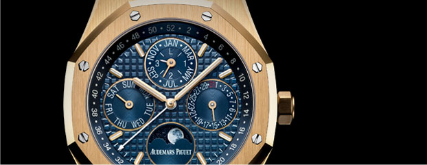

- 
-

2015.11.11
与大师一同优雅挥杆， 解构时间： 2015伊森 高尔夫大师尊享会
金秋时节，瑞士高级制表品牌爱彼（Audemars Piguet）在上海览海国际高尔夫俱乐部举...
阅读更多内容 —> - 
-
2015.09.24
与GIULIO PAPI荣获 2015年盖亚奖 ”企业 家精神奖“
盖亚奖是国际钟表博物馆（International Horol ogy Museum）于1993年所创立的奖项。
阅读更多内容 —> -
2015.09.16
全新皇家橡树万年历腕 表
有史以来，人类就常以太阳测量当天时间，并根据月 亮以及其他可观测星体与星座制订历法。人类自然而 然地从大自然的日月星辰汲取灵感，继而以其为基准 ，发明出最早的测时工具与概念。
阅读更多内容 —>